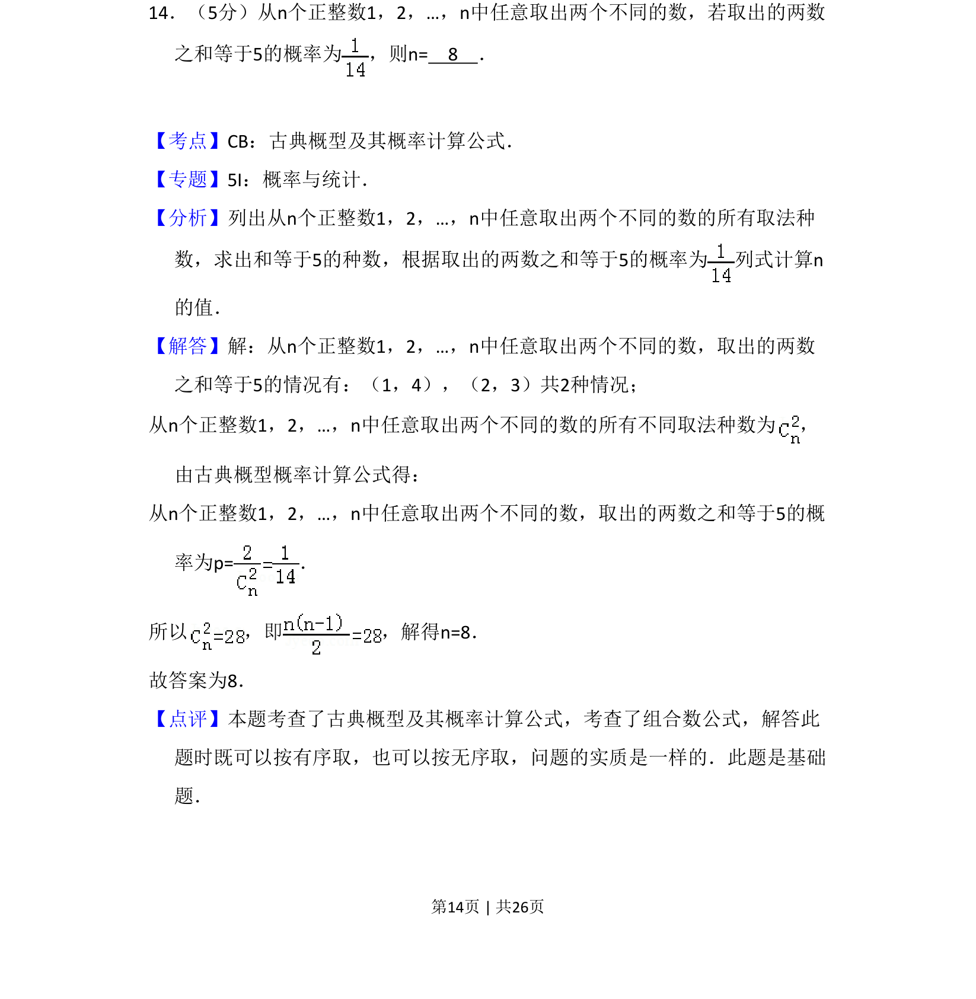
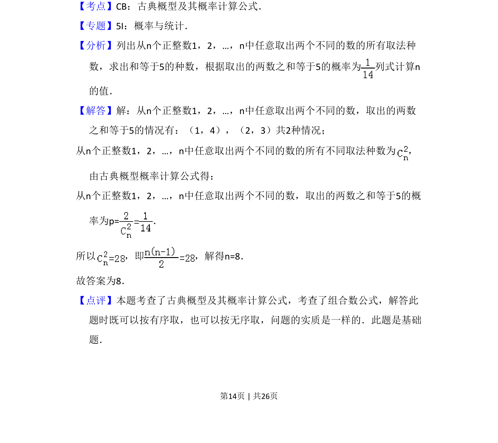

考点：古典概型 组合数 概率计算

从n个正整数中取两数之和为5的概率求n，涉及组合计数与古典概型。

📄 原 PDF 第 14 页：
素材/真题/吉林/2008-2024·（吉林）数学高考真题/2013年高考数学试卷（理）（新课标Ⅱ）（解析卷）.pdf
14．（5分）从n个正整数1，2，…，n中任意取出两个不同的数，若取出的两数 之和等于5的概率为 ，则n= 8 ．
【考点】CB：古典概型及其概率计算公式．菁优网版权所有 【专题】5I：概率与统计． 【分析】列出从n个正整数1，2，…，n中任意取出两个不同的数的所有取法种 数，求出和等于5的种数，根据取出的两数之和等于5的概率为 列式计算n 的值． 【解答】解：从n个正整数1，2，…，n中任意取出两个不同的数，取出的两数 之和等于5的情况有：（1，4），（2，3）共2种情况； 从n个正整数1，2，…，n中任意取出两个不同的数的所有不同取法种数为 ， 由古典概型概率计算公式得： 从n个正整数1，2，…，n中任意取出两个不同的数，取出的两数之和等于5的概 率为p=． 所以 ，即 ，解得n=8． 故答案为8． 【点评】本题考查了古典概型及其概率计算公式，考查了组合数公式，解答此 题时既可以按有序取，也可以按无序取，问题的实质是一样的．此题是基础 题．